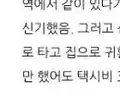

NAVER BLOG ARCHIVE
보존본
개인 아카이브
지나가던 공상가
행복은 그다지 멀리 있지 않기에.
전체글
원본 블로그
아카이브 안내
하소
총 282개의 글
조각글) 행복이라는 건.
2026-10-05T20:24:51+09:00
4/13
2026-10-05T20:24:51+09:00
이상, 괴리, 목표, 자괴감.
2026-10-05T20:24:50+09:00
헛수고, 반복, 두려움
2026-10-05T20:24:49+09:00
시작, 공포, 설레임
2026-10-05T20:24:48+09:00
돈, 일탈
2026-10-05T20:24:47+09:00
신중함.
2026-10-05T20:24:46+09:00
적응.
2026-10-05T20:24:45+09:00
취기.
2026-10-05T20:24:44+09:00
추억의 끝자락.
2026-10-05T20:24:43+09:00
위로.
2026-10-05T20:24:43+09:00
혼돈, 고요의 속성.
2026-10-05T20:24:41+09:00
피로가 열리다.
2026-10-05T20:24:40+09:00
2
후회하는 일.
2026-10-05T20:24:39+09:00
잡을 수 없는 거리감.
2026-10-05T20:24:38+09:00
사회가 가르쳐 준 것.
2026-10-05T20:24:37+09:00
갑질 에피소드.
2026-10-05T20:24:36+09:00
푸른 붓.
2026-10-05T20:24:35+09:00
뒤떨어진 감정.
2026-10-05T20:24:34+09:00
이어지는 궤적.
2026-10-05T20:24:33+09:00
끝에 보이는 것.
2026-10-05T20:24:32+09:00
글과 마주한 삶.
2026-10-05T20:24:32+09:00
다시 하루를 맞이하며.
2026-10-05T20:24:31+09:00
빛이 빚어내는 시간.
2026-10-05T20:24:23+09:00
2
햇빛 일상파크.
2026-10-05T20:24:21+09:00
2
초저녁의 평온.
2026-10-05T20:24:21+09:00
그림을 배워 봅시다.
2026-10-05T20:24:19+09:00
크리스마스 선물.
2026-10-05T20:24:14+09:00
악연, 하아암수.
2026-10-05T20:24:13+09:00
2
크리스마스 입니다만.
2026-10-05T20:24:11+09:00
2018년을 시작하기 위한 자기 보고서.
2026-10-05T20:24:10+09:00
말을 꺼내기 전에.
2026-10-05T20:24:05+09:00
날씨가 많이 춥습니다.
2026-10-05T20:24:05+09:00
공백 제거.
2026-10-05T20:24:04+09:00
슬픈 기억.
2026-10-05T20:24:03+09:00
봄에 이끌리다.
2026-10-05T20:24:02+09:00
4
빈자리와 마주치다.
2026-10-05T20:23:59+09:00
2
기억의 공백.
2026-10-05T20:23:58+09:00
말을 머금으며.
2026-10-05T20:23:57+09:00
답을 찾아가며.
2026-10-05T20:23:55+09:00
내일부터!
2026-10-05T20:23:54+09:00
요통에는 무엇인가.
2026-10-05T20:23:46+09:00
2
2020 12 17 블로그씨 (? : 데이트 코스)
2026-10-05T20:23:44+09:00
최근 즐겨하는 게임들
2026-10-05T20:23:43+09:00
2020 12 31 블로그씨 새해 계획
2026-10-05T20:23:41+09:00
2020 12 28 - 겨울 음식
2026-10-05T20:23:41+09:00
1/13
2026-10-05T20:23:40+09:00
도씨와 동씨가 제일 좋아.
2026-10-05T20:23:39+09:00
21 02 16 근황.
2026-10-05T20:23:37+09:00
21 02 17?
2026-10-05T20:23:36+09:00
21 02 18
2026-10-05T20:23:34+09:00
21 02 19
2026-10-05T20:23:33+09:00
21 02 26
2026-10-05T20:23:32+09:00
21 03 10
2026-10-05T20:23:28+09:00
21 04 01
2026-10-05T20:23:26+09:00
21 04 02
2026-10-05T20:23:25+09:00
21 04 03
2026-10-05T20:23:24+09:00
21 04 12
2026-10-05T20:23:23+09:00
21 04 13
2026-10-05T20:23:22+09:00
21 04 14
2026-10-05T20:23:21+09:00
21 04 15
2026-10-05T20:23:20+09:00
21 04 16
2026-10-05T20:23:19+09:00
21 04 17
2026-10-05T20:23:18+09:00
21 04 18
2026-10-05T20:23:17+09:00
2
21 04 19
2026-10-05T20:23:15+09:00
21 04 20
2026-10-05T20:23:13+09:00
21 04 21
2026-10-05T20:23:11+09:00
GS 25 편의점 근무자의 먹어보았다 - 순후추라면 사골곰탕맛
2026-10-05T20:23:10+09:00
5
21 04 23
2026-10-05T20:23:07+09:00
2021 05 26
2026-10-05T20:23:05+09:00
3
부산 맛집 - 파스타, 스파게티 그라치에
2026-10-05T20:23:01+09:00
5
21 05 27
2026-10-05T20:22:59+09:00
21 05 29
2026-10-05T20:22:58+09:00
21 05 30
2026-10-05T20:22:57+09:00
21 05 31
2026-10-05T20:22:56+09:00
21 06 01 02
2026-10-05T20:22:55+09:00
21 06 03
2026-10-05T20:22:54+09:00
21 06 07
2026-10-05T20:22:47+09:00
21 06 08
2026-10-05T20:22:45+09:00
21 06 09
2026-10-05T20:22:44+09:00
21 06 10
2026-10-05T20:22:42+09:00
21 06 14
2026-10-05T20:22:41+09:00
21 06 15
2026-10-05T20:22:39+09:00
2
21 06 16
2026-10-05T20:22:37+09:00
21 06 17
2026-10-05T20:22:36+09:00
21 06 18
2026-10-05T20:22:35+09:00
21 06 19 - 20
2026-10-05T20:22:33+09:00
3
21 06 21 - 24
2026-10-05T20:22:31+09:00
21 06 26 - 27
2026-10-05T20:22:30+09:00
6/26 부산 태종대 수국
2026-10-05T20:22:29+09:00
7
21 07 13
2026-10-05T20:22:25+09:00
21 07 01 -12
2026-10-05T20:22:25+09:00
중복이 오기 전에.
2026-10-05T20:22:24+09:00
중복, 무더위
2026-10-05T20:22:18+09:00
1680 시간의 감정선
2026-10-05T20:22:15+09:00
대화의 과정
2026-10-05T20:22:12+09:00
7월 마지막 주
2026-10-05T20:22:11+09:00
무더운 날들이여 부디 자비를
2026-10-05T20:22:10+09:00
감정 분석 - 1
2026-10-05T20:22:10+09:00
비 소식은 있으나
2026-10-05T20:22:09+09:00
8/5 ~ 8/6 태안반도에서
2026-10-05T20:22:07+09:00
3
아이스 스윗트 중독
2026-10-05T20:22:07+09:00
주문 토끼 BLOOM 정주행 시작.
2026-10-05T20:22:05+09:00
가벼운 촬영에도
2026-10-05T20:22:04+09:00
촬영 기술 배우기 전 확인사항
2026-10-05T20:22:03+09:00
김해에서의 3개월
2026-10-05T20:22:02+09:00
주문 토끼 3기를 보면서
2026-10-05T20:22:01+09:00
2
8월 마지막 주
2026-10-05T20:21:59+09:00
8월을 보내며
2026-10-05T20:21:56+09:00
저물어가는 한 해 그리고 샹치...
2026-10-05T20:21:55+09:00
하루를 보람차게 보내는 방법에 대하여
2026-10-05T20:21:54+09:00
익어가는 계절
2026-10-05T20:21:54+09:00
9개월의 시간을 지나가며
2026-10-05T20:21:52+09:00
10 / 16
2026-10-05T20:21:51+09:00
보는 눈과 흘기는 눈
2026-10-05T20:21:45+09:00
11월 3주차, 근황-
2026-10-05T20:21:43+09:00
올해의 종장
2026-10-05T20:21:39+09:00
0
2026-10-05T20:21:39+09:00
12/6
2026-10-05T20:21:38+09:00
12/9
2026-10-05T20:21:37+09:00
12월 3주차를 보내며
2026-10-05T20:21:35+09:00
12/13
2026-10-05T20:21:35+09:00
2021년 후회와 미련의 구렁텅이
2026-10-05T20:21:34+09:00
1월 중순을 걸어가며
2026-10-05T20:21:31+09:00
2022년을 맞이하며
2026-10-05T20:21:31+09:00
3/3
2026-10-05T20:21:30+09:00
주관적 이야기) 서장 - 호불호에 대하여
2026-10-05T20:21:28+09:00
저에게 주말이란
2026-10-05T20:21:25+09:00
3/11
2026-10-05T20:21:25+09:00
보는 게 제일 즐거울 시기
2026-10-05T20:21:23+09:00
22/03/14
2026-10-05T20:21:23+09:00
세월의 덧없음을 느끼는 4월
2026-10-05T20:21:20+09:00
봄이 왔네요
2026-10-05T20:21:20+09:00
자차 장만
2026-10-05T20:21:19+09:00
22년 6월
2026-10-05T20:21:18+09:00
자비없는 더위 8월
2026-10-05T20:21:12+09:00
글을 쓰는 방향성과 목적
2026-10-05T20:21:11+09:00
이야기에 스며들어 넋은
2026-10-05T20:21:10+09:00
주인장 근황
2026-10-05T20:21:10+09:00
걷기 vs 뛰기
2026-10-05T20:21:09+09:00
23년도의 하소
2026-10-05T20:21:06+09:00
1월은 금방
2026-10-05T20:21:05+09:00
어떤 20대 남성의 삶은 문제 + 슬럼프
2026-10-05T20:21:01+09:00
오늘 올릴 것들
2026-10-05T20:21:00+09:00
내일 작성할 것
2026-10-05T20:20:41+09:00
프로젝트 시나리오~ #1
2026-10-05T20:20:37+09:00
며칠간 트위치로 방송을 해보면서 느낀점...
2026-10-05T20:20:34+09:00
한국 문화 어쩌구를 모티브로 삼는다는 내용
2026-10-05T20:20:33+09:00
하소 선생 방송합니다!
2026-10-05T20:20:26+09:00
매일 할 일들
2026-10-05T20:20:22+09:00
4월 18일 21시 20분 ~ 20일 5시 35분까지의 스트리밍 경과 보고서
2026-10-05T20:20:21+09:00
트위치 스트리밍 2달차, 깨달은 것과 변환점을 맞이하며
2026-10-05T20:20:20+09:00
6월초 근황
2026-10-05T20:20:19+09:00
하소 선생의 방송 관련
2026-10-05T20:20:18+09:00
새 소재 구상 중
2026-10-05T20:20:17+09:00
편의점 새벽 개점(오픈)조의 업무에 대하여~
2026-10-05T20:20:15+09:00
트릭컬 리바이브 사전 예약 개시!!!!!!!
2026-10-05T20:20:10+09:00
3/18 근황, 정말 오랜만입니다
2026-10-05T20:20:05+09:00
9월 첫 주 근황과 방송은 어떠한가
2026-10-05T20:20:04+09:00
2
18개월 동안 스트리머로서 달려왔던 삶, 회고
2026-10-05T20:20:02+09:00
어서 가라 쉽지 않았던 9월이여
2026-10-05T20:20:01+09:00
10월 너마저도 이렇게 쉽지 않은 것인가
2026-10-05T20:20:00+09:00
스트리머로 돌아갈 수 없는...
2026-10-05T20:19:58+09:00
슬픈 생각, 생각, 원념
2026-10-05T20:19:58+09:00
편의점 (현실)에서도 매우 중요한 호감도 체계에 대하여
2026-10-05T20:19:57+09:00
생각하라 그리고 잊지 말아야 한다
2026-10-05T20:19:56+09:00
술독에서 벗어나기
2026-10-05T20:19:55+09:00
롤대남, 편돌이, 도태남의 10월
2026-10-05T20:19:54+09:00
부산 나들이 후기를
2026-10-05T20:19:53+09:00
6
치지직 초초보 스트리머 하소 인사 올립니다.
2026-10-05T20:19:50+09:00
1월 중간 점검
2026-10-05T20:19:48+09:00
발베니 14년과 달콤한 1분기
2026-10-05T20:19:47+09:00
을사년의 1월을 보내며!
2026-10-05T20:19:44+09:00
2월 3일, 월요일은 항상 쉽지가 않다.
2026-10-05T20:19:43+09:00
2월 6일 ~ 7일 서울 여행 계획 (1)
2026-10-05T20:19:43+09:00
생일에 서울 가기~
2026-10-05T20:19:38+09:00
홍대에서 생에 첨으로 사주 봤읍니다
2026-10-05T20:19:37+09:00
2월 6일 ~ 7일 홀로 서울 여행 결산, 생일, 깨닫다!
2026-10-05T20:19:35+09:00
3
정서의 울타리, 양육에 관한 안건.
2026-10-05T20:19:34+09:00
의욕이 떨어졌을 때, 어떻게 하면 좋을까?
2026-10-05T20:19:33+09:00
쿄야, 사랑은 해 봤니?
2026-10-05T20:19:32+09:00
매일 행복할 수는 없으니까, 항상 즐겁지는 않다.
2026-10-05T20:19:31+09:00
살아가는 법을 배운다는 것
2026-10-05T20:19:30+09:00
절제하는 삶은 아름답기에
2026-10-05T20:19:29+09:00
나라는 작은 존재, 므왓.
2026-10-05T20:19:28+09:00
감정을 소모하는 것, 싫어할 수 밖에 없는 현상에 대하여
2026-10-05T20:19:27+09:00
거리를 두고, 주변을 둘러보고, 자신에 대해 생각하며
2026-10-05T20:19:26+09:00
3월 집필 준비, 소재 1차 정리
2026-10-05T20:19:25+09:00
2월의 마지막 날, 톡톡 빠른 시간.
2026-10-05T20:19:24+09:00
나는 나를 그만두지 않았다.
2026-10-05T20:19:23+09:00
일의 결말은 퇴직인 것처럼
2026-10-05T20:19:22+09:00
맞이한 3월, 미키 17 관람, 내일은 극복
2026-10-05T20:19:22+09:00
내딛은 그 길에 싫은 것들이 떠오를 지라도
2026-10-05T20:19:21+09:00
3월 5일 극3성화 1차 계획
2026-10-05T20:19:19+09:00
소야, 밥은 먹고 다니니?
2026-10-05T20:19:18+09:00
그 무엇도 너를 쓰러뜨릴 수 없지만, 녹일 수는 있겠지.
2026-10-05T20:19:16+09:00
보상을 필요로 할 때, 아니라고 할 수 있는가?
2026-10-05T20:19:15+09:00
어떤 일이 있어도, 함께 들어올린 방패는 견고하다는 것을
2026-10-05T20:19:14+09:00
그렇소, 소원을 빕시다.
2026-10-05T20:19:13+09:00
축하하며, 애도하며 살아가는 일
2026-10-05T20:19:12+09:00
나는... 나는...! 어떻게 하면 좋지?
2026-10-05T20:19:11+09:00
3월 12일, 나는 꽤나 걱정이 되지 않을 수가 없다.
2026-10-05T20:19:09+09:00
별 거 아니더라? 별 거더라.
2026-10-05T20:19:08+09:00
밤에 걷는 행위 그것은 야행
2026-10-05T20:19:06+09:00
잊고 있었던 열정의 씨앗은 다음 단계로, 진화하는 모습은 내일의 그림자로, 헛된 환상은 어제의 그을음으로
2026-10-05T20:19:05+09:00
3월 14일의 하소, 자유를 얻다.
2026-10-05T20:19:04+09:00
으흐흐
2026-10-05T20:19:03+09:00
2
극3성화 계획 약 2주일 동안의 결과 보고
2026-10-05T20:19:02+09:00
3월 17일, 내가 만든 집은 없지만.
2026-10-05T20:19:01+09:00
마시는 것으로 도피하는가 자유로워 지는가
2026-10-05T20:18:59+09:00
근무 없는 일주일을 보내고
2026-10-05T20:18:58+09:00
어떻게 모든 순간을 이해하겠어? 다만, 받아들이려는 노력을 해야 하는 거겠지.
2026-10-05T20:18:57+09:00
2
인간실격자의 금수 환상향
2026-10-05T20:18:55+09:00
잘못 살아왔지만, 아마 절대 바뀌지 않을 것 같은 자신을 애도하며.
2026-10-05T20:18:54+09:00
나 자신으로 있기 위한 과정과 슬픈 날들
2026-10-05T20:18:53+09:00
히어로가 되고 싶은 누군가는 다시 비상하기 위하여
2026-10-05T20:18:52+09:00
잠이 잘 안 오는 새벽...
2026-10-05T20:18:51+09:00
오랜만에 근무하기, 독서하기, 절주하기
2026-10-05T20:18:50+09:00
RP와 새로운 간판을 만들며
2026-10-05T20:18:49+09:00
이야기를 시작할 때, 감정을 갖게 됐을 때.
2026-10-05T20:18:48+09:00
2
우리 이제 어쩌면 좋지?
2026-10-05T20:18:47+09:00
반복되는 슬픔에도 이겨내는 방법을
2026-10-05T20:18:45+09:00
기록하는 일, 족적 남기기.
2026-10-05T20:18:44+09:00
당신은 안녕하십니까?
2026-10-05T20:18:43+09:00
4월 22일 1 일어나요, 일 해야죠?
2026-10-05T20:18:41+09:00
존재하는 것만으로도 가치가 있다는 것
2026-10-05T20:18:40+09:00
재미 발견하기
2026-10-05T20:18:39+09:00
삶의 목적이 희미해지고, 마음은 무겁기만 한 시기에
2026-10-05T20:18:38+09:00
타이핑 할 때는 자유롭기에, 빈손으로 돌아가더라도 창작의 검을 쥐고
2026-10-05T20:18:36+09:00
그곳에 낙원이 존재하기에
2026-10-05T20:18:32+09:00
영화, 애니 감상하는 날.
2026-10-05T20:18:30+09:00
25년 6월 25일의 근황, 나는 생각을 좀 줄여보려고 하는 게 맞지 않을까.
2026-10-05T20:18:20+09:00
6월을 마무리하며, 나는 7월을 맞이할 준비가 되어있을까?
2026-10-05T20:18:16+09:00
7월 나는 무엇을 해야만 하는가?
2026-10-05T20:18:15+09:00
2
야외 근무 2일차, 챈까지 닿아라 불사의 뻘글.
2026-10-05T20:18:12+09:00
나는 모를 거다 내 문제가 무엇일지.
2026-10-05T20:18:11+09:00
3분기 목표 세우기.
2026-10-05T20:18:10+09:00
퇴근을 하고 집에 도착했는데?
2026-10-05T20:18:09+09:00
오늘은 12편 쓰는 날? 그리고, 내일 영화봐야지?
2026-10-05T20:18:04+09:00
그런 심상상상공상환상 이라는 현상.
2026-10-05T20:18:03+09:00
알은 세계다.
2026-10-05T20:18:02+09:00
멈추지 않아야 한다는 것을 잊지 마시오.
2026-10-05T20:18:00+09:00
2
데이트 글 후퇴.
2026-10-05T20:17:59+09:00
비, 근데 밖.
2026-10-05T20:17:58+09:00
노아 (파자마) 인연 스토리 보고 난 후...
2026-10-05T20:17:56+09:00
짧은 글) 7월 23일의 기록
2026-10-05T20:17:55+09:00
3
내일은 그냥 내일이야, 그런 거지.
2026-10-05T20:17:54+09:00
맑음 맑음 대유쾌
2026-10-05T20:17:53+09:00
으흐흐 으흐흐흐흐흐
2026-10-05T20:17:52+09:00
8월 7일 근황황
2026-10-05T20:17:51+09:00
뒤늦은 성장통을 겪은 8월.
2026-10-05T20:17:50+09:00
무더운 여름에 그을린 흔적
2026-10-05T20:17:49+09:00
더는 잘못되지 않기 위해, 이번 달의 나여.
2026-10-05T20:17:48+09:00
9월 첫 째주 평일의 기록.
2026-10-05T20:17:47+09:00
빵빵빵빵빵 티니핑빵
2026-10-05T20:17:22+09:00
치르질 치르질 치질
2026-10-05T20:17:19+09:00
습작 진행도.
2026-10-05T20:17:15+09:00
그렇게 소리 소문 없이 오지 말란 말이오.
2026-10-05T20:17:08+09:00
옆집 천사 애니로 정주행 완료. 그리고?
2026-10-05T20:17:01+09:00
옆집 천사님 애니를 보고 느낀 점 (주로 하소연) + 좋은 모먼트와 소재화까지.
2026-10-05T20:17:00+09:00
3
10월 23일 소카톨리카의 습작 자가 피드백 1회차 방송 녹화본
2026-10-05T20:16:48+09:00
지공 주인장의 나름대로 캐릭터 분석? 고찰? 박수 대갈채.
2026-10-05T20:16:45+09:00
이틀동안 일기도 안 쓰고 뭐했나?
2026-10-05T20:16:42+09:00
12월 2주차에서 후끈해질 수 있을만한 연말 계획을? 초안!
2026-10-05T20:04:50+09:00
시간이 너무 빠르게 지나가서 곤란한 것입니다.
2026-10-05T20:04:21+09:00
1월 22일 공개작 초 카구야 공주에 대하여. (애매함.)
2026-10-05T20:04:20+09:00
5
휴.사.끄) (2)
2026-10-05T20:03:55+09:00
쉬는 시간에 끄적이기) 1 - 1 제 아내입니다. 그리고 오늘은 제 생일이네요. (웃음)
2026-10-05T20:03:51+09:00
대충 3월 9일 어쩌구
2026-10-05T20:03:45+09:00
도대체 뭘 검색해서 들어오는 게지?
2026-10-05T20:03:17+09:00
배민 B 마트 10주차의 간단 후기.
2026-10-05T20:02:57+09:00
업뎃 중) 배민 B 마트 17주차 후기 + 근무 팁
2026-10-05T20:02:54+09:00
모자무싸 11화까지 보면서.
2026-10-05T20:02:49+09:00
정류소 너머에서.
2026-10-05T20:02:46+09:00
끼얏호우! 후에 급우울해지며.
2026-10-05T20:02:45+09:00
작년부터 6월은 쉽지 않은 기간이었다고.
2026-10-05T20:02:44+09:00
섹스하는 게 그렇게 중요할까? (진짜 모름)
2026-10-05T20:02:43+09:00
아무튼 살아있다고 알림.
2026-10-05T20:02:42+09:00
반년차 배민 B 마트 OP (오픈 파트) 크루가 알려드립니다. (여름편)
Wed, 22 Jul 2026 18:29:58 +0900
26년 3분기 집필 현황 및 계획에 대하여.
Fri, 17 Jul 2026 16:39:30 +0900
주인장 인생 첫 데이트 해보았습니다.
2025-07-20 오후 3시경 (스크린샷의 '10시간 전' 표시로 추정)

2
삭제 전 스크린샷 보존본
어제는 살목지 오늘은 하츄핑 2.
Thu, 06 Aug 2026 13:21:05 +0900